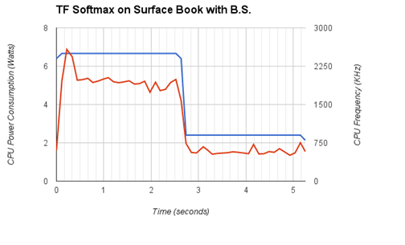

Project Overview
Deep learning has sparked a new found interest in machine learning due to its ability to solve several types of tasks. There are large computational complexities associated with deep learning due to the size of datasets and the connections between data points. The most recent libraries use a combination of CPU and GPU computation to accelerate the deep learning algorithms. Most notably, this occurs during the training period. Double digit performance increases have been noted since the inclusion of GPUs in deep learning. However, since their inclusion, GPUs have grown in power consumption to meet computational demands. This has led to issues in reliability and cooling in data center applications. In order to strike a balance between power and performance, this paper aims to answer the holistic question of, “Are GPUs more energy efficient for deep learning algorithms?” We will compare the energy costs and the total time required for the algorithms.
Software
For databases we will be using MNIST, training two networks. One will be trained with LeNet 5, the other with Softmax, and both are implemented on top of TensorFlow.
For power measurements we will be using Intel Power Gadget, which accurately measures the power used by the CPU in real-time. For power measurements of the GPU we will use nvidia-smi interface, which allows for continuous status monitoring of the GPU as it processes our machine learning code.
Hardware
For hardware we have Vishnu's laptop with Intel i7-3630 QM, Karim's laptop with Intel i7-6600U, and one additional computer with a NVIDIA GTX 980 Ti. CPU power measurements were done on both laptops, with additional measurements to check the effect of turning Battery Saver on while training on Karim's laptop.
Results
All in-depth analysis can be found here.Softmax training
For Softmax training, all hardware resources completed the training within 5 seconds. Though the GPU training was the fastest, it also consumed the most energy. As such, our recommendation for training using simple algorithms is that CPU training is more efficient as the increase in time is small while the energy difference is great.

LeNet 5 training
CPU training took much longer than GPU training; as such, the energy and time savings from GPU training are very prominent. Further analysis is here.
Authors and Contributors
Karim Elmaaroufi and Vishnu Razdan are the students who worked on this project. Professor Diana Marculescu and Dimitrios Stamoulis have been essential mentors for this project.